1)Pantalla de ingreso al sistema (Login):
Desde esta pantalla se selecciona al usuario que hara uso del sistema y se ingresa
la contraseña correspondiente.Solo los usuarios autorizados podran ingresar
a Credit-Click.
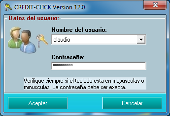
2)Pantalla principal de Credit-Click:
Esta es la pantalla principal del sistema. Seleccionando los botones (iconos) correspondientes
se podran cargar las demas pantallas que permiten registrar clientes, registrar creditos, etc.
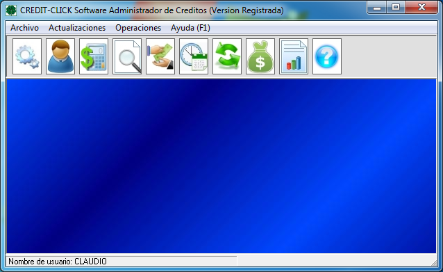
Explicacion de los iconos de la pantalla principal:
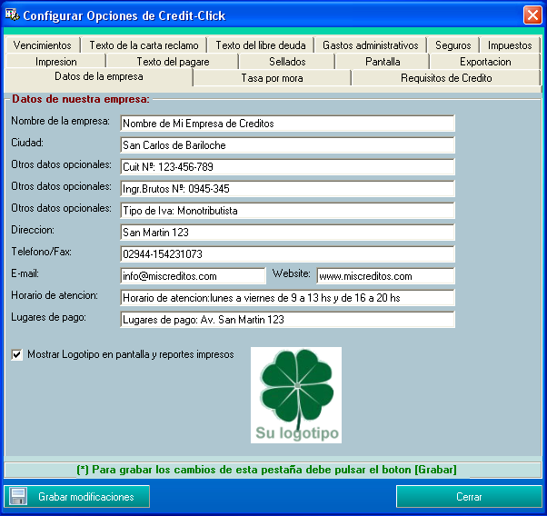
4)Pantalla Registrar Clientes:
Desde esta pantalla se registran los datos de los clientes que solicitan creditos. Ademas
de los datos personales se pueden ingresar los datos del garante, datos laborales, etc.
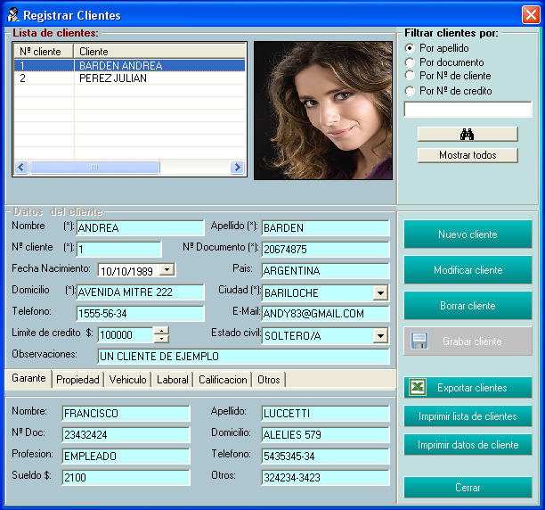
5)Pantalla Registrar Creditos:
Esta es una de las pantallas mas importantes del sistema.Aqui se selecciona
el cliente, el importe del prestamo, la cantidad de cuotas, la tasa de financiacion, la formula de financiacion,
y automaticamente se generan las cuotas con sus respectivos importes y fecha de vencimiento.
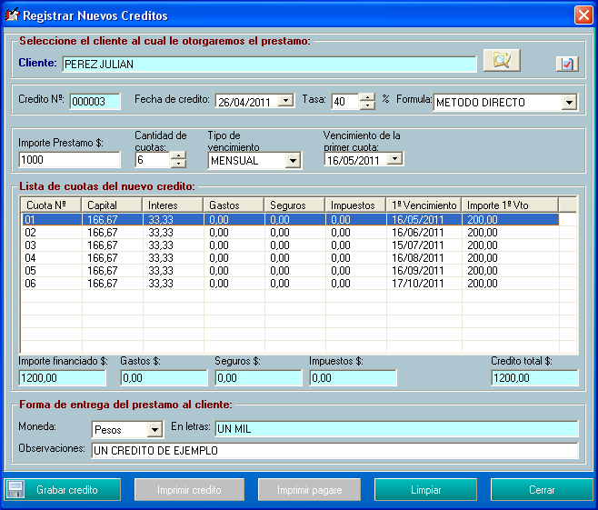
6)Pantalla Consultar Creditos:
Desde aqui se pueden consultar los creditos registrados en el sistema con sus
respectivas cuotas. Aqui tambien se puede imprimir el pagare, e imprimir las cuotas con codigo de barras.
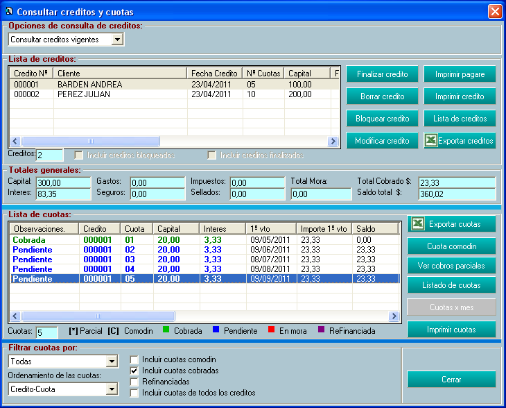
7)Impresion de una cuota:
En esta imagen vemos la vista previa de la impresion de una cuota mensual de
un credito.
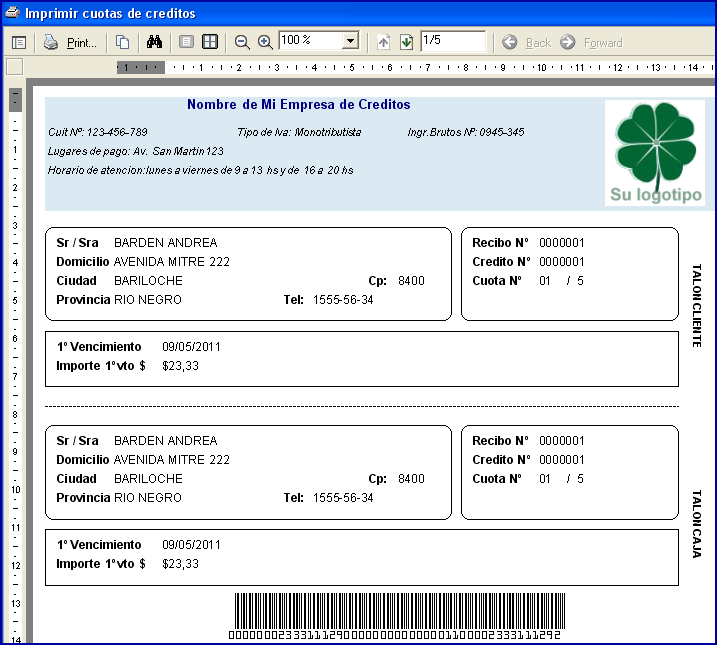
8)Pantalla Cobrar Cuotas:
En esta pantalla se pueden cobrar una o mas cuotas en forma simultanea seleccionandolas con el mouse. Tambien se pueden
registrar cobros parciales.
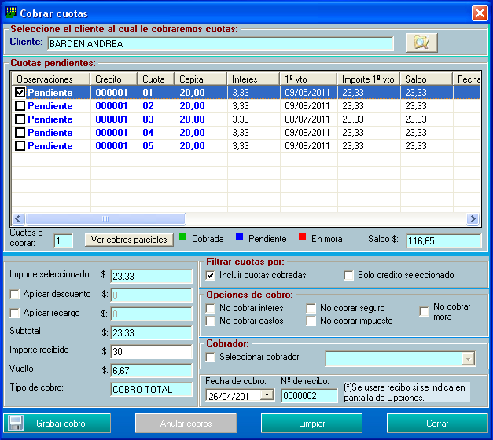
9)Listado de cuotas (vista previa del reporte
impreso):
Aqui vemos la vista previa de un listado de cuotas.
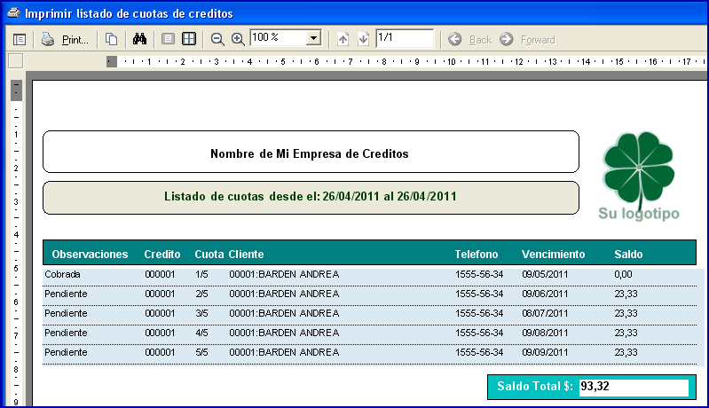
10)Pantallas de estadisticas:
Credit-Click cuenta con una pantalla de estadisticas donde se podra ver graficamente
los siguientes datos:
Los graficos pueden ser de barras, lineas o area en 2 o en tres dimensiones. A continuacion vemos algunos graficos de ejemplo.
Este es un grafico de barras en 2D:
Aqui vemos la cantidad de creditos otorgados en los ultimos 6 meses
mas recientes.
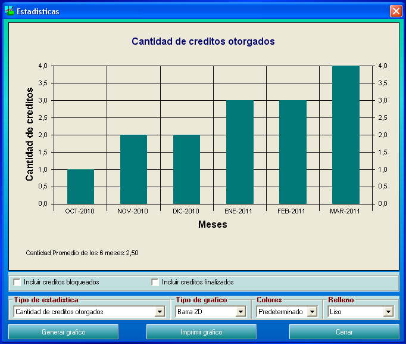
Este es un grafico de barras en 3D:
Aqui vemos el capital prestado en los ultimos seis meses.
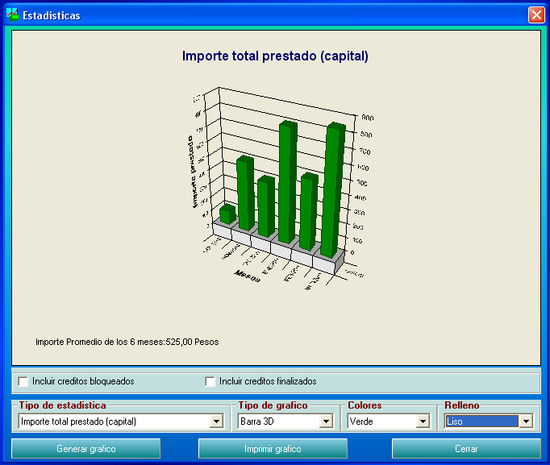
Este es un grafico de area en 3D:
Aqui vemos el importe a cobrar en los proximos seis meses.
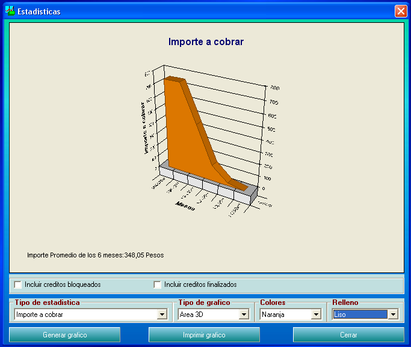
Este es un grafico de linea en 3D.
Aqui vemos la cantidad de clientes registrados en los ultimos seis
meses.
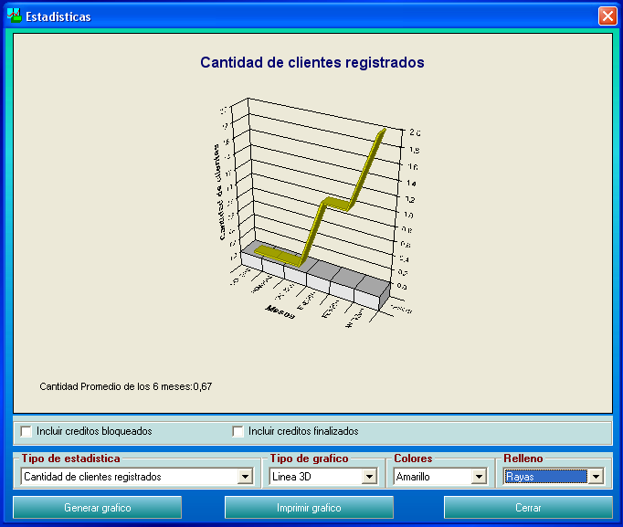
11)Otras pantallas:
Las demas pantallas de Credit-Click las podra ver descargando el demo.